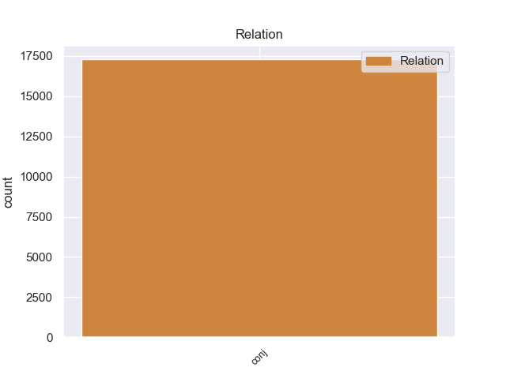
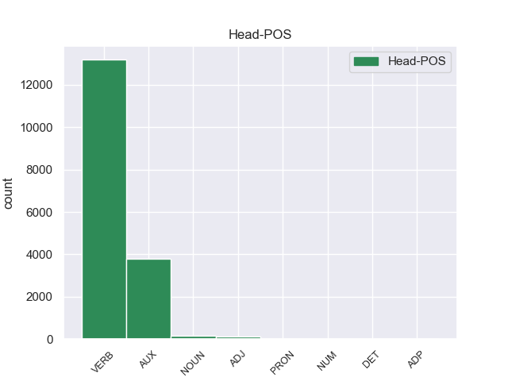
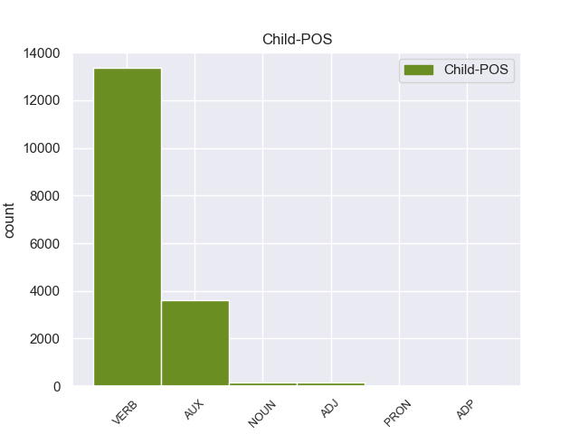

Distribution of features within this leaf



Agreement Rules sorted by frequency.
- When the dependent token is the conjunct(conj) of the head token, and the head token is VERB
1 Hann _ _ _ _ 0 _ _ _
2 tók _ _ _ _ 0 _ _ _
3 ímóti _ _ _ _ 0 _ _ _
4 honum _ _ _ _ 0 _ _ _
5 , _ _ _ _ 0 _ _ _
6 gav _ _ _ _ 0 _ _ _
7 honum _ _ _ _ 0 _ _ _
8 nýggjan _ _ _ _ 0 _ _ _
9 búna _ _ _ _ 0 _ _ _
10 , _ _ _ _ 0 _ _ _
11 helt _ _ _ _ 0 _ _ _
12 veitslu _ _ _ _ 0 _ _ _
13 fyri fyri VERB _ Mood=Ind|Number=Sing|Person=3|Tense=Past|VerbForm=Fin|Voice=Act 0 _ _ _
14 honum- _ _ _ _ 0 _ _ _
15 og _ _ _ _ 0 _ _ _
16 gjørdi gjørdi VERB _ Mood=Ind|Number=Sing|Person=3|Tense=Past|VerbForm=Fin|Voice=Act 13 conj _ _
17 hann _ _ _ _ 0 _ _ _
18 til _ _ _ _ 0 _ _ _
19 umboð _ _ _ _ 0 _ _ _
20 Sítt _ _ _ _ 0 _ _ _
21 aftur _ _ _ _ 0 _ _ _
22 . _ _ _ _ 0 _ _ _
1 Hetta _ _ _ _ 0 _ _ _
2 er vere AUX _ Mood=Ind|Tense=Pres|VerbForm=Fin 0 _ _ _
3 ein _ _ _ _ 0 _ _ _
4 tvey _ _ _ _ 0 _ _ _
5 ára _ _ _ _ 0 _ _ _
6 útbúgving _ _ _ _ 0 _ _ _
7 , _ _ _ _ 0 _ _ _
8 sum _ _ _ _ 0 _ _ _
9 er vere AUX _ Mood=Ind|Tense=Pres|VerbForm=Fin 2 conj _ _
10 býtt _ _ _ _ 0 _ _ _
11 upp _ _ _ _ 0 _ _ _
12 í _ _ _ _ 0 _ _ _
13 fýra _ _ _ _ 0 _ _ _
14 semestur _ _ _ _ 0 _ _ _
15 , _ _ _ _ 0 _ _ _
16 har _ _ _ _ 0 _ _ _
17 møguleiki _ _ _ _ 0 _ _ _
18 er _ _ _ _ 0 _ _ _
19 at _ _ _ _ 0 _ _ _
20 nema _ _ _ _ 0 _ _ _
21 sær _ _ _ _ 0 _ _ _
22 kunnleika _ _ _ _ 0 _ _ _
23 í _ _ _ _ 0 _ _ _
24 uppmáting _ _ _ _ 0 _ _ _
25 , _ _ _ _ 0 _ _ _
26 viðgerð _ _ _ _ 0 _ _ _
27 av _ _ _ _ 0 _ _ _
28 uppmátingardáta _ _ _ _ 0 _ _ _
29 , _ _ _ _ 0 _ _ _
30 og _ _ _ _ 0 _ _ _
31 fyriskipan _ _ _ _ 0 _ _ _
32 og _ _ _ _ 0 _ _ _
33 stýring _ _ _ _ 0 _ _ _
34 av _ _ _ _ 0 _ _ _
35 byggiprojektum _ _ _ _ 0 _ _ _
36 . _ _ _ _ 0 _ _ _
1 38 _ _ _ _ 0 _ _ _
2 ) _ _ _ _ 0 _ _ _
3 Innaneftirlit _ _ _ _ 0 _ _ _
4 : _ _ _ _ 0 _ _ _
5 Skipað _ _ _ _ 0 _ _ _
6 tiltøk _ _ _ _ 0 _ _ _
7 , _ _ _ _ 0 _ _ _
8 sum _ _ _ _ 0 _ _ _
9 skulu _ _ _ _ 0 _ _ _
10 tryggja _ _ _ _ 0 _ _ _
11 , _ _ _ _ 0 _ _ _
12 at _ _ _ _ 0 _ _ _
13 virksemið _ _ _ _ 0 _ _ _
14 á _ _ _ _ 0 _ _ _
15 alibrúkinum _ _ _ _ 0 _ _ _
16 verður _ _ _ _ 0 _ _ _
17 lagt _ _ _ _ 0 _ _ _
18 til _ _ _ _ 0 _ _ _
19 rættis _ _ _ _ 0 _ _ _
20 , _ _ _ _ 0 _ _ _
21 skipað _ _ _ _ 0 _ _ _
22 , _ _ _ _ 0 _ _ _
23 útint _ _ _ _ 0 _ _ _
24 og _ _ _ _ 0 _ _ _
25 viðlíkahildið viðlíkahildið NOUN _ Aspect=Perf|Case=Nom|Gender=Neut|Number=Sing|Strength=Strong|Tense=Past|VerbForm=Part|Voice=Pass 0 _ _ _
26 í _ _ _ _ 0 _ _ _
27 samsvari _ _ _ _ 0 _ _ _
28 við _ _ _ _ 0 _ _ _
29 galdandi _ _ _ _ 0 _ _ _
30 lóg _ _ _ _ 0 _ _ _
31 ella _ _ _ _ 0 _ _ _
32 við _ _ _ _ 0 _ _ _
33 krøv _ _ _ _ 0 _ _ _
34 , _ _ _ _ 0 _ _ _
35 heimilað heimilan VERB _ Aspect=Perf|Case=Nom|Gender=Neut|Number=Sing|Strength=Strong|Tense=Past|VerbForm=Part|Voice=Pass 25 conj _ _
36 í _ _ _ _ 0 _ _ _
37 galdandi _ _ _ _ 0 _ _ _
38 lóg _ _ _ _ 0 _ _ _
39 . _ _ _ _ 0 _ _ _
1 Til _ _ _ _ 0 _ _ _
2 millummála _ _ _ _ 0 _ _ _
3 fingu _ _ _ _ 0 _ _ _
4 vit vit ADJ _ Mood=Ind|Tense=Pres|VerbForm=Fin 0 _ _ _
5 grønmeti _ _ _ _ 0 _ _ _
6 og _ _ _ _ 0 _ _ _
7 dressing _ _ _ _ 0 _ _ _
8 , _ _ _ _ 0 _ _ _
9 sum _ _ _ _ 0 _ _ _
10 sjálavndi _ _ _ _ 0 _ _ _
11 er vere AUX _ Mood=Ind|Number=Sing|Person=3|Tense=Pres|VerbForm=Fin 4 conj _ _
12 kanna _ _ _ _ 0 _ _ _
13 og _ _ _ _ 0 _ _ _
14 góðtiki _ _ _ _ 0 _ _ _
15 av _ _ _ _ 0 _ _ _
16 Heilsufrøðiligu _ _ _ _ 0 _ _ _
17 Starvstovu _ _ _ _ 0 _ _ _
18 ;) _ _ _ _ 0 _ _ _
19 Vit _ _ _ _ 0 _ _ _
20 hava _ _ _ _ 0 _ _ _
21 sungið _ _ _ _ 0 _ _ _
22 " _ _ _ _ 0 _ _ _
23 Dukka _ _ _ _ 0 _ _ _
24 mín _ _ _ _ 0 _ _ _
25 er _ _ _ _ 0 _ _ _
26 blá _ _ _ _ 0 _ _ _
27 " _ _ _ _ 0 _ _ _
28 . _ _ _ _ 0 _ _ _
1 Vit vitje PRON _ Mood=Ind|Tense=Pres|VerbForm=Fin 0 _ _ _
2 liggja _ _ _ _ 0 _ _ _
3 á _ _ _ _ 0 _ _ _
4 øðrum _ _ _ _ 0 _ _ _
5 plássi _ _ _ _ 0 _ _ _
6 , _ _ _ _ 0 _ _ _
7 og _ _ _ _ 0 _ _ _
8 , _ _ _ _ 0 _ _ _
9 skulu _ _ _ _ 0 _ _ _
10 vit _ _ _ _ 0 _ _ _
11 gera _ _ _ _ 0 _ _ _
12 okkum _ _ _ _ 0 _ _ _
13 vónir _ _ _ _ 0 _ _ _
14 um _ _ _ _ 0 _ _ _
15 uppflyting _ _ _ _ 0 _ _ _
16 , _ _ _ _ 0 _ _ _
17 er vere AUX _ Mood=Ind|Tense=Pres|VerbForm=Fin 1 conj _ _
18 sigur _ _ _ _ 0 _ _ _
19 eitt _ _ _ _ 0 _ _ _
20 krav _ _ _ _ 0 _ _ _
21 . _ _ _ _ 0 _ _ _
1 Munurin _ _ _ _ 0 _ _ _
2 á át ADP _ Mood=Ind|Number=Sing|Person=3|Tense=Pres|VerbForm=Fin 0 _ _ _
3 hitanum _ _ _ _ 0 _ _ _
4 um _ _ _ _ 0 _ _ _
5 dagin _ _ _ _ 0 _ _ _
6 og _ _ _ _ 0 _ _ _
7 um _ _ _ _ 0 _ _ _
8 náttina _ _ _ _ 0 _ _ _
9 kann kanat VERB _ Mood=Ind|Number=Sing|Person=3|Tense=Pres|VerbForm=Fin 2 conj _ _
10 vera _ _ _ _ 0 _ _ _
11 30 _ _ _ _ 0 _ _ _
12 ° _ _ _ _ 0 _ _ _
13 C _ _ _ _ 0 _ _ _
14 ella _ _ _ _ 0 _ _ _
15 meiri _ _ _ _ 0 _ _ _
16 . _ _ _ _ 0 _ _ _
1 Øll _ _ _ _ 0 _ _ _
2 sum _ _ _ _ 0 _ _ _
3 arbeiða _ _ _ _ 0 _ _ _
4 innan _ _ _ _ 0 _ _ _
5 sáttmálaøkið _ _ _ _ 0 _ _ _
6 hjá _ _ _ _ 0 _ _ _
7 Føroya _ _ _ _ 0 _ _ _
8 Arbeiðarafelag _ _ _ _ 0 _ _ _
9 eiga eigan DET _ Mood=Ind|Tense=Past|VerbForm=Fin 0 _ _ _
10 at _ _ _ _ 0 _ _ _
11 verða _ _ _ _ 0 _ _ _
12 limir _ _ _ _ 0 _ _ _
13 í _ _ _ _ 0 _ _ _
14 lokalfelag _ _ _ _ 0 _ _ _
15 og _ _ _ _ 0 _ _ _
16 gjalda gjalde VERB _ Mood=Ind|Tense=Past|VerbForm=Fin 9 conj _ _
17 limagjald _ _ _ _ 0 _ _ _
18 til _ _ _ _ 0 _ _ _
19 Føroya _ _ _ _ 0 _ _ _
20 Arbeiðarafelag _ _ _ _ 0 _ _ _
21 ( _ _ _ _ 0 _ _ _
22 1,5 _ _ _ _ 0 _ _ _
23 % _ _ _ _ 0 _ _ _
24 av _ _ _ _ 0 _ _ _
25 lønini _ _ _ _ 0 _ _ _
26 ) _ _ _ _ 0 _ _ _
27 og _ _ _ _ 0 _ _ _
28 eitt _ _ _ _ 0 _ _ _
29 ávíst _ _ _ _ 0 _ _ _
30 % _ _ _ _ 0 _ _ _
31 -gjald _ _ _ _ 0 _ _ _
32 til _ _ _ _ 0 _ _ _
33 lokalfelagið _ _ _ _ 0 _ _ _
34 og _ _ _ _ 0 _ _ _
35 rinda _ _ _ _ 0 _ _ _
36 1,5 _ _ _ _ 0 _ _ _
37 % _ _ _ _ 0 _ _ _
38 av _ _ _ _ 0 _ _ _
39 lønini _ _ _ _ 0 _ _ _
40 í _ _ _ _ 0 _ _ _
41 lívstryggingargjaldið _ _ _ _ 0 _ _ _
42 . _ _ _ _ 0 _ _ _
1 Tvey tvey NUM _ Mood=Ind|Number=Sing|Person=3|Tense=Past|VerbForm=Fin|Voice=Act 0 _ _ _
2 sovorðin _ _ _ _ 0 _ _ _
3 livandi _ _ _ _ 0 _ _ _
4 , _ _ _ _ 0 _ _ _
5 illavorðin _ _ _ _ 0 _ _ _
6 fólk _ _ _ _ 0 _ _ _
7 stóðu _ _ _ _ 0 _ _ _
8 tætt _ _ _ _ 0 _ _ _
9 hjá _ _ _ _ 0 _ _ _
10 tí _ _ _ _ 0 _ _ _
11 deyða _ _ _ _ 0 _ _ _
12 manninum _ _ _ _ 0 _ _ _
13 , _ _ _ _ 0 _ _ _
14 sum _ _ _ _ 0 _ _ _
15 var vere VERB _ Mood=Ind|Number=Sing|Person=3|Tense=Past|VerbForm=Fin|Voice=Act 1 conj _ _
16 borin _ _ _ _ 0 _ _ _
17 inn _ _ _ _ 0 _ _ _
18 her _ _ _ _ 0 _ _ _
19 í _ _ _ _ 0 _ _ _
20 kirkjuna _ _ _ _ 0 _ _ _
21 , _ _ _ _ 0 _ _ _
22 áðrenn _ _ _ _ 0 _ _ _
23 hann _ _ _ _ 0 _ _ _
24 skuldi _ _ _ _ 0 _ _ _
25 leggjast _ _ _ _ 0 _ _ _
26 í _ _ _ _ 0 _ _ _
27 grøvina _ _ _ _ 0 _ _ _
28 . _ _ _ _ 0 _ _ _
Disagree Examples:
1 Tað _ _ _ _ 0 _ _ _
2 var vere AUX _ Mood=Ind|Tense=Past|VerbForm=Fin 0 _ _ _
3 sera _ _ _ _ 0 _ _ _
4 áhugavert _ _ _ _ 0 _ _ _
5 at _ _ _ _ 0 _ _ _
6 møta _ _ _ _ 0 _ _ _
7 henni _ _ _ _ 0 _ _ _
8 , _ _ _ _ 0 _ _ _
9 tí _ _ _ _ 0 _ _ _
10 livialdurin _ _ _ _ 0 _ _ _
11 í _ _ _ _ 0 _ _ _
12 Kenya _ _ _ _ 0 _ _ _
13 er vere AUX _ Mood=Ind|Tense=Pres|VerbForm=Fin 2 conj _ _
14 settur _ _ _ _ 0 _ _ _
15 til _ _ _ _ 0 _ _ _
16 ímillum _ _ _ _ 0 _ _ _
17 47 _ _ _ _ 0 _ _ _
18 og _ _ _ _ 0 _ _ _
19 55 _ _ _ _ 0 _ _ _
20 ár _ _ _ _ 0 _ _ _
21 . _ _ _ _ 0 _ _ _
1 Kortið _ _ _ _ 0 _ _ _
2 verður _ _ _ _ 0 _ _ _
3 síðan _ _ _ _ 0 _ _ _
4 sperrað sperran VERB _ Aspect=Perf|Case=Nom|Gender=Neut|Number=Sing|Strength=Strong|Tense=Past|VerbForm=Part|Voice=Pass 0 _ _ _
5 og _ _ _ _ 0 _ _ _
6 kann kanat VERB _ Mood=Ind|Number=Sing|Person=1|Tense=Pres|VerbForm=Fin|Voice=Act 4 conj _ _
7 ikki _ _ _ _ 0 _ _ _
8 nýtast _ _ _ _ 0 _ _ _
9 ella _ _ _ _ 0 _ _ _
10 misnýtast _ _ _ _ 0 _ _ _
11 . _ _ _ _ 0 _ _ _
1 Hetta _ _ _ _ 0 _ _ _
2 er vere AUX _ Mood=Ind|Tense=Pres|VerbForm=Fin 0 _ _ _
3 eitt _ _ _ _ 0 _ _ _
4 afturvendandi _ _ _ _ 0 _ _ _
5 tiltak _ _ _ _ 0 _ _ _
6 , _ _ _ _ 0 _ _ _
7 sum _ _ _ _ 0 _ _ _
8 dómsprósturin _ _ _ _ 0 _ _ _
9 Uni _ _ _ _ 0 _ _ _
10 Næs _ _ _ _ 0 _ _ _
11 byrjaði byrjae VERB _ Mood=Ind|Tense=Past|VerbForm=Fin 2 conj _ _
12 við _ _ _ _ 0 _ _ _
13 , _ _ _ _ 0 _ _ _
14 tá _ _ _ _ 0 _ _ _
15 hann _ _ _ _ 0 _ _ _
16 var _ _ _ _ 0 _ _ _
17 prestur _ _ _ _ 0 _ _ _
18 í _ _ _ _ 0 _ _ _
19 Vestmanna _ _ _ _ 0 _ _ _
20 . _ _ _ _ 0 _ _ _
1 Oknin _ _ _ _ 0 _ _ _
2 landar _ _ _ _ 0 _ _ _
3 svartkalva _ _ _ _ 0 _ _ _
4 á _ _ _ _ 0 _ _ _
5 Toftum _ _ _ _ 0 _ _ _
6 Oknin _ _ _ _ 0 _ _ _
7 landar landa VERB _ Mood=Ind|Tense=Pres|VerbForm=Fin 0 _ _ _
8 13.000 _ _ _ _ 0 _ _ _
9 Pund _ _ _ _ 0 _ _ _
10 av _ _ _ _ 0 _ _ _
11 svartkalva _ _ _ _ 0 _ _ _
12 á _ _ _ _ 0 _ _ _
13 Toftun _ _ _ _ 0 _ _ _
14 , _ _ _ _ 0 _ _ _
15 veiðan veiða ADJ _ Aspect=Perf|Case=Nom|Gender=Neut|Number=Sing|Strength=Strong|Tense=Past|VerbForm=Part|Voice=Pass 7 conj _ _
16 er _ _ _ _ 0 _ _ _
17 boðin _ _ _ _ 0 _ _ _
18 út _ _ _ _ 0 _ _ _
19 á _ _ _ _ 0 _ _ _
20 Fiskamarknaðinum _ _ _ _ 0 _ _ _
21 fyri _ _ _ _ 0 _ _ _
22 kr _ _ _ _ 0 _ _ _
23 . _ _ _ _ 0 _ _ _
24 144-túsund _ _ _ _ 0 _ _ _
25 . _ _ _ _ 0 _ _ _
1 Oknin _ _ _ _ 0 _ _ _
2 landar _ _ _ _ 0 _ _ _
3 svartkalva _ _ _ _ 0 _ _ _
4 á _ _ _ _ 0 _ _ _
5 Toftum _ _ _ _ 0 _ _ _
6 Oknin _ _ _ _ 0 _ _ _
7 landar _ _ _ _ 0 _ _ _
8 13.000 _ _ _ _ 0 _ _ _
9 Pund _ _ _ _ 0 _ _ _
10 av _ _ _ _ 0 _ _ _
11 svartkalva _ _ _ _ 0 _ _ _
12 á _ _ _ _ 0 _ _ _
13 Toftun _ _ _ _ 0 _ _ _
14 , _ _ _ _ 0 _ _ _
15 veiðan veiða ADJ _ Aspect=Perf|Case=Nom|Gender=Neut|Number=Sing|Strength=Strong|Tense=Past|VerbForm=Part|Voice=Pass 0 _ _ _
16 er vere AUX _ Mood=Ind|Number=Sing|Person=3|Tense=Pres|VerbForm=Fin|Voice=Act 15 conj _ _
17 boðin _ _ _ _ 0 _ _ _
18 út _ _ _ _ 0 _ _ _
19 á _ _ _ _ 0 _ _ _
20 Fiskamarknaðinum _ _ _ _ 0 _ _ _
21 fyri _ _ _ _ 0 _ _ _
22 kr _ _ _ _ 0 _ _ _
23 . _ _ _ _ 0 _ _ _
24 144-túsund _ _ _ _ 0 _ _ _
25 . _ _ _ _ 0 _ _ _